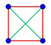

I am not amazingly good at maths, so it is obvious to me whether I can solve a problem or not after 5 minutes. How do people spend hours on problems?
How do people spend hours on problems? Excellent, excellent question.
One of the bad misconceptions people have about math problem solving is that it’s a mechanical process: either you know which algorithm to follow, in which case just fucking follow it and be done with it, or you don’t, in which case there’s nothing you can do.
You’re not to blame for thinking that. This is probably the most common view of what mathematics is about, fueled by years of mindless schoolwork requiring little more than rote memorization of formulas, blindly applied when the question seems to vaguely match some keyword or pattern.
On good days, this breaks my heart. On bad ones, it drives me insane.
Here’s the truth: solving good math problems is a journey requiring creativity, imagination, perseverance, curiosity, experience, and – yes – a dose of knowledge, sometimes little, sometimes shiploads.
Hours, you say? I’m currently on my fifth week of working on some random recent IMO problem. True, I only work on it in my head, occasionally, when I have a quiet moment to think, but I assure you it would not have taken me five minutes even if I was giving it my full, undivided attention.
You’re wondering what people do during those hours (or days, or weeks).
Do they try different formulas? No, solving math problems isn’t about scanning your gallery of formulas and checking if one of them fits. Had that been the case, you’re right, it would have taken minutes to identify success or failure. It’s never the case. A question to be solved with a formula isn’t a math problem, it’s a chore.
Do they consult other people? Maybe, if they’re stuck, and if there’s someone available to help them. But this isn’t why it’s taking long. When you have someone to consult with, things usually progress much faster. When I brought in my dad for help, it was usually over within a day, even though he lived 5,000 miles away and was totally blind.
More often than not it’s a solitary journey. My dad is no longer alive.
Here’s one of my favorite math circle talks (also, the first one I ever gave). I like it because 90 seconds after I walk into class the audience is already hard at work on a problem.
So I walk in, draw this on the blackboard (or, ugh, whiteboard), and gathering all the dramatic flair I can muster, I boom: WHAT’S THIS?
(Those aren’t actually circles. I just put four dots on the board, square-like).
“A square!”, says everyone.
Right, I acknowledge, except it’s not really a square, is it? Just four points sitting at the corners of a square. OK, and among these four points, how many distinct distances do you see?
“Two!”, says everyone.
Correct! I’m ecstatically confirming, there are two distinct distances here: the edges of the square make one distance, and those diagonals are another.

So, I continue, there’s four points here, on the board, with just two distinct distances between them, and your job in the next 25 minutes is to find more arrangements like this: other ways of placing four points in the plane in such a way that only two unique distances are formed.
That’s it. Off you go. Scribble, erase, scribble again, talk to your neighbor, work in groups for all I care, work solo, try again, fail, succeed, look for more, ask me anything.
There’s a few Frequently Asked Questions that always come up: What do you mean by “other” ways, is it ok if we just did a smaller square or a rotated one? (Half the time they show me “a diamond”, namely a square rotated 45 degrees). No, find something really different: rotations and scaling are boring. Are there other solutions? Yes, there are. How many? Not telling. Can we place two points at the same spot? No, that’s cheating, four points means four points. Doesn’t this rectangle work? You tell me (it doesn’t). Do these four equally spaced points on a line work? You tell me (they don’t). Does this pyramid work? It sure does, but this wasn’t the question, I asked for the points to be put in the plane.
Now, why am I telling you all this?
Because for almost all audiences I’ve ever worked with, this is a genuinely challenging math problem, and if you try it, you may understand why it’s taking hours. The solution isn’t obvious. There’s no formula in sight. If you’re not completely intellectually lazy, there’s absolutely no reason for you to despair after five minutes: all this takes is drawing dots on paper.
Go ahead, try it. Do it. Anyone can make progress on this problem. I’ve had seven year olds make good progress on it, and they weren’t particularly math-oriented. I’ve had rooms full of middle school and high school math teachers struggle mightily, but only few were totally lost or disinterested. There’s no reason to be lost. Some solutions are usually found within minutes. Some are harder. Yes, there’s more than one.
After 25 minutes, most audiences find most solutions. Rarely do they find them all, and I take different paths when they do and when they don’t. Then, we move on to the next level: Did you find them all? A hesitant “Yes, we think so” usually follows (it’s awesome when they’re certain they’re done, and then one of them finds another). Are you sure? No. How can you be sure?
We then move on to talk about proofs. How can you tell if you’re done? You need proof. A precise, unassailable argument that shows that the only possible ways to arrange four points on the plane with two distinct distances are these X we’ve just found.
How do you build such an argument? Where do you start? We talk about the combinatorial aspects of the problem, and the geometric ones, we draw diagrams, we check our logic, we reason. We spend time pondering a particular possible arrangement and then I dazzle them with a story of how my dad solved it brilliantly, with no calculation, by elevating the problem a step up.
We never plug anything into any formula. This is mathematics, for christ sake, not a day at the assembly line.
One of the best conversations is when I teach this to math teachers. What is that? I ask them. Is it Euclidean Geometry? No, they say. Why not? Because we studied Euclidean Geometry in college and it was nothing like that. What was it like, then? Well, there were diagrams and you had to prove that this triangle is equilateral. Was it creative? Sometimes, yeah, because there were several possible paths and it wasn’t clear which one to follow.
Euclidean Geometry is actually a fantastic intro to mathematics, only it’s out of fashion nowadays. And worse, those teachers, wonderful people that they are but so unprepared, what they understand mathematics to be is what they were taught to ask. They’re rarely asking anything that’s not in the textbook. They can rarely answer anything that’s not in the textbook. If you threw this problem at them in a geometry textbook they’d have been totally lost.
A girl walked up to me during one of those circles. She had questions. What happens if it’s seven points instead of four? Three distances instead of two? She had a theory. It wasn’t right, but never mind: she was curious. There’s hundreds of questions you can ask taking off from this one, and most of them are unsolved to this day. One of the central ones was solved last year.
Hours, OP? You can spend a lifetime working on this problem, and a million others. That’s mathematics.